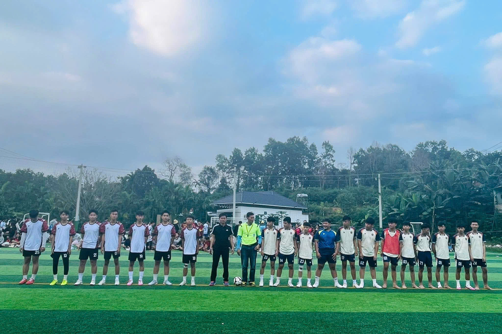
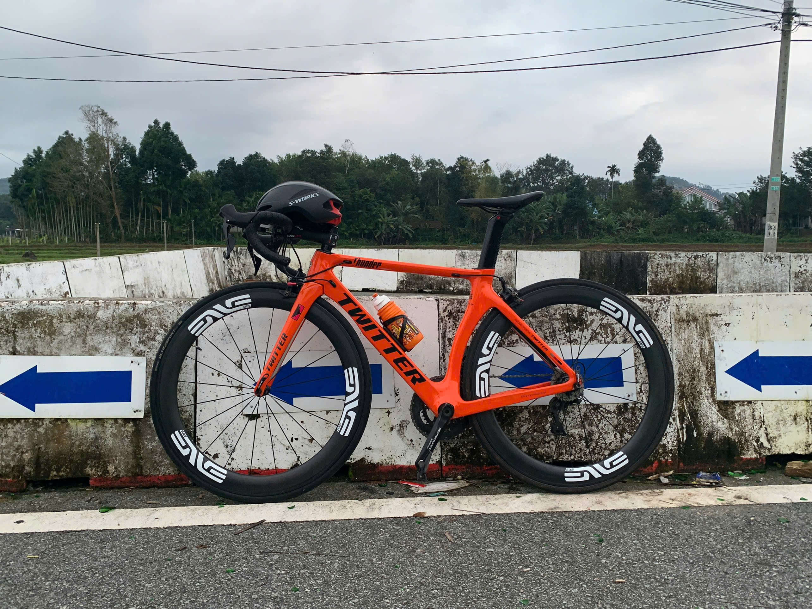

Hoat động nổ và hiệu quả
Cháy hết mình trong các cuộc chơi
Giành những giải thưởng cao nhất
|  |  |
CLB Bóng chuyềnNgày 15 tháng 8 năm 1970 Đội bóng chuyền nữ BTL Thông tin được Bộ Tổng Tham mưu giao nhiệm vụ tổ chức đội hình thi đấu phục vụ Hội nghị Quân ủy Trung ương tại Tam Đảo Vĩnh Phú; tại buổi gặp mặt trước thi đấu Đội vinh dự được Đồng chí Thượng tướng Văn Tiến Dũng Tổng Tham mưu trưởng Quân đội nhân dân Việt Nam tặng hoa và chụp ảnh lưu niệm và đội vinh dự được Thưởng vụ Đảng ủy BTL Thông tin quyết định lấy ngày 15 – 8 là ngày truyền thống của Đội bóng chuyền nữ. |
||